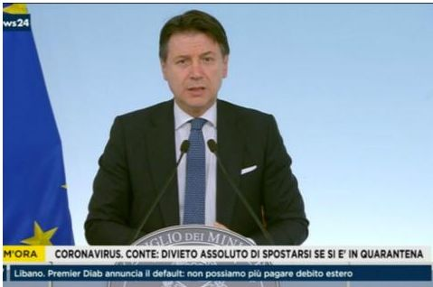

确诊超560例8州进入紧急状态，美国是否会步意大利后尘？
原文链接 备份链接 2月29日，特朗普在保守派政治行动会议上。来源：特朗普推特 记者：刘芳 “ “最害怕的还是（在疫情过后）我人没怎么样但是课却没过。” ” 不断扩散的新冠肺炎疫情给美国东西海岸人口稠密地区持续带来压力，就连总统特朗普也因 …

根据当地时间3月8日18时意大利卫生部公布的最新数据，意大利现有新冠病毒患者6387例，死亡366例，治愈622例，累计确诊感染新冠病毒总人数为7375例，较3月7日18时新增1492例，新增133例死亡病例。
据外媒报道，意大利皮埃蒙特大区主席阿尔贝托·西里奥确诊感染新冠肺炎，成为24小时内该国第二位确诊的地区主席。
而据韩国中央防疫对策本部8日通报，截至当地时间8日下午4时，韩国较当日零时新增新冠肺炎确诊病例179例，累计确诊病例7313例。
因此，截至目前，意大利新冠肺炎确诊病例超过韩国，成为全球除中国之外疫情最严重国家。

意大利封城范围扩至14省！

据BNO Newsroom报道，意大利总理孔特当地时间8日签署法令，封锁该国北部的伦巴第大区及14个省份，涉及至少1600万人，热门旅游区米兰和威尼斯也将受影响。
报道指出，意大利政府将全面封锁伦巴第大区，封城禁令还涉及包括摩德纳，帕尔马，皮亚琴察，雷焦艾米利亚，里米尼，佩萨罗和乌尔比诺，威尼斯，帕多瓦，特雷维索，韦尔切利，韦尔巴诺-库西奥-奥索拉，诺瓦拉，阿斯蒂和亚历山德里亚在内的14个省，法令将持续到4月3日。
封锁期间，上述地区的所有学校停课，所有娱乐场所、博物馆、体育馆、游泳池将被关闭。此外，除专业赛事外，所有体育活动将被暂停，专业赛事不允许观众在场观看。违反封锁令的人可被处以罚款或监禁，如有必要，意政府将出动军队。
据意大利《共和报》报道，孔特签署法令后，米兰中心车站和加里波底门站的夜班列车内涌进了大量人群，超过500人想要登上开往意大利南部的最后一班列车。售票处至少有150人等待购买车票，希望在封锁令生效前离开伦巴第大区。此外，还有部分暂时居住在米兰的南部省份居民驾车离开，担心困在当地。
另据法新社报道，意大利政府也在全国范围内关闭电影院、剧院、博物馆等场所。
24小时内两位地区主席确诊
据路透社援引意大利国家广播电台(RAI)8日报道，意大利皮埃蒙特大区主席阿尔贝托·西里奥确诊感染新冠肺炎，成为24小时内该国第二位确诊的地区主席。
据报道，皮埃蒙特以北部城市都灵为中心，是意大利新冠肺炎疫情第四严重的地区。
7日，意大利拉齐奥大区主席、民主党领袖尼古拉·津加雷蒂通过社交媒体向公众通报，他已被确诊感染新冠肺炎，目前症状较轻，正在家中接受隔离观察和治疗。
意大利陆军参谋长确诊感染新冠肺炎
意大利媒体报道，意大利陆军参谋长萨尔瓦多莱·法利纳8日下午发表声明称，他本人病毒核酸检测呈阳性，目前正在自己的居所内隔离。根据政府颁布的法令和有关卫生条例，他正配合调查他最近几天的活动轨迹和接触史。法利纳在声明中说，他将继续履行自己的职责，但需要他本人出席的工作将由另外一名将军代替。他向正在防控疫情的陆军军人们致敬并表示感谢。
伦巴第大区10%的医务工作者感染
随着确诊病人持续增加，意大利多地医院的床位告急，尤其是无法满足重症监护的需求。意大利麻醉医生、重症医生联合协会主席韦加洛（Alessandro Vergallo）3月4日在接受意大利国际广播电台采访时表示：“按照这个增长速度，我们撑不过一个星期。医院的空床位用两只手都能数得过来，医疗系统在这种状况下无法继续运行。”
意大利北部的大部分医院已经暂停急诊和普通手术，旨在节约医疗资源，腾出更多病床，以满足新冠肺炎患者的住院需求。从3月4日开始，意大利军队医院开辟出新冠专用病区。
据美联社报道，意大利卫生部官员称，伦巴第大区10%的医务工作者感染新冠病毒，ICU病床爆满，医疗资源非常紧张。该区退休医生和尚未完成期末考试的护理专业学生都已投入一线进行救治工作。
“这是我工作以来见过的最糟糕的情况，新冠病毒就像‘海啸’一般席卷医院。”伦巴第大区克雷莫纳医院的传染病科医生安吉洛（Angelo Pan）说，他所在医院至少35名患者需要插管或机械通气。
第一季度GDP恐现0.3%的衰退
3月8日，欧盟对意大利的财政请求做出回应，允许意大利扩大财政预算，用于防疫紧急支出的63亿欧元将不列入赤字计算中。
对于意大利第一季度的经济增长，以博科尼大学经济学家达维里（Daveri）为代表的观点认为，意大利的经济很可能在第一季度出现0.3%的衰退。需要注意的是，意大利2019年的国内生产总值（GDP）增速仅为0.2%
以旅游业、交通运输为代表的服务业是意大利重要的创收来源，也是受疫情影响最大的行业之一。根据意大利官方数据，2019年意大利的旅游业收入约为450亿欧元，为意大利贡献了约10%的GDP，高于全球平均水平（1.8%）。
但是，从旅游的季节性分布来看，当前处于意大利旅游业的淡季，整体冲击尚不明显。有分析指出，从中长期来看，还要看意大利的疫情在四月前是否会出现显著改观，进而再评估疫情对其旅游业的影响。一般而言，第二、三季度将迎来欧洲传统的旅游旺季。
与此同时，有分析指出要警惕意大利的经济波动对整个欧盟经济带来的负面效应，疫情阻碍了欧盟内部人员和货物的自由流动，或将导致欧盟内部贸易下滑。
意大利疫情危急，教皇要开直播了
上月26日，教皇方济各被看到出现咳嗽、擤鼻子等状况。当日早些时候的一场活动中，方济各还特意与前排的信徒们握了手，并在教皇专车驶过圣彼得广场时亲吻了一个婴儿，还在最后向到访的主教们致意。
次日（2月27日），原定当日上午前往拉兰特圣约翰大教堂，与罗马神职人员出席四旬斋仪式，不过梵蒂冈方面表示，教皇“有些不舒服，更愿意待在圣玛尔大之家，（他的）其他活动照常进行。”
据梵蒂冈媒体报道，尽管教皇身体“轻微不适”，但他还是照常在圣玛尔大之家主持了清晨弥撒，随后又接见了“全球天主教气候运动”的成员。
到了3月1日，方济各宣布，因患上感冒身体“轻微不适”，取消原定于晚些时候进行为期一周的静修活动。
当地时间8日，梵蒂冈方面又表示，由于意大利疫情爆发，为了避免出现聚集性传染，教皇决定取消一些主要的公开露面活动，并从梵蒂冈内部进行直播，现场不会有任何公众参与。声明中还强调，教皇没有任何其他病症。
综合海外网、新京报、环球网、中国新闻网、第一财经、央视新闻、观察者网


推荐阅读

点击大图 |寻常的“超级星期二”，不寻常的民主党选情

点击大图 |武汉楼市自救

原文链接 备份链接 2月29日，特朗普在保守派政治行动会议上。来源：特朗普推特 记者：刘芳 “ “最害怕的还是（在疫情过后）我人没怎么样但是课却没过。” ” 不断扩散的新冠肺炎疫情给美国东西海岸人口稠密地区持续带来压力，就连总统特朗普也因 …
原文链接 备份链接 文 |《财经》特派记者 金焱 发自华盛顿 编辑 | 苏琦 2020年3月6日，我打算给自己放一天的假。 算起来自从武汉疫情暴发，我在1月21采写了第一篇文章《美确诊首例新型病毒病例，或成全球性公共卫生危机事件信号》 …
原文链接 备份链接 据世卫组织新冠肺炎情况报告，截至欧洲中部时间7日10时(北京时间7日17时)，中国境外新冠肺炎确诊病例数达到21110例，死亡413例。其中，从3月7日零时至8日零时，意大利新冠肺炎确诊病例新增1332例，累计确诊病例 …
原文链接 备份链接 体坛周报全媒体驻意大利记者 陈硕麟 3月7号晚间，意大利新冠病毒累计感染病例逼近6000大关，当天骤增的1200余例新确诊病例，也比前日高出一倍。于是，意大利政府将红色封锁区域的范围扩大，整个伦巴第大区都被封锁，除了紧 …
原文链接 备份链接 国内31个省区市新增确诊降至两位数；全球累计确诊病例已破10万大关；意大利疫情最严重地区医疗资源已消耗殆尽 文 |《财经》数据研究员徐进 图 |《财经》视觉中心 编辑 | 郝洲 一、国内疫情防控形势继续向好，局面尽在 …